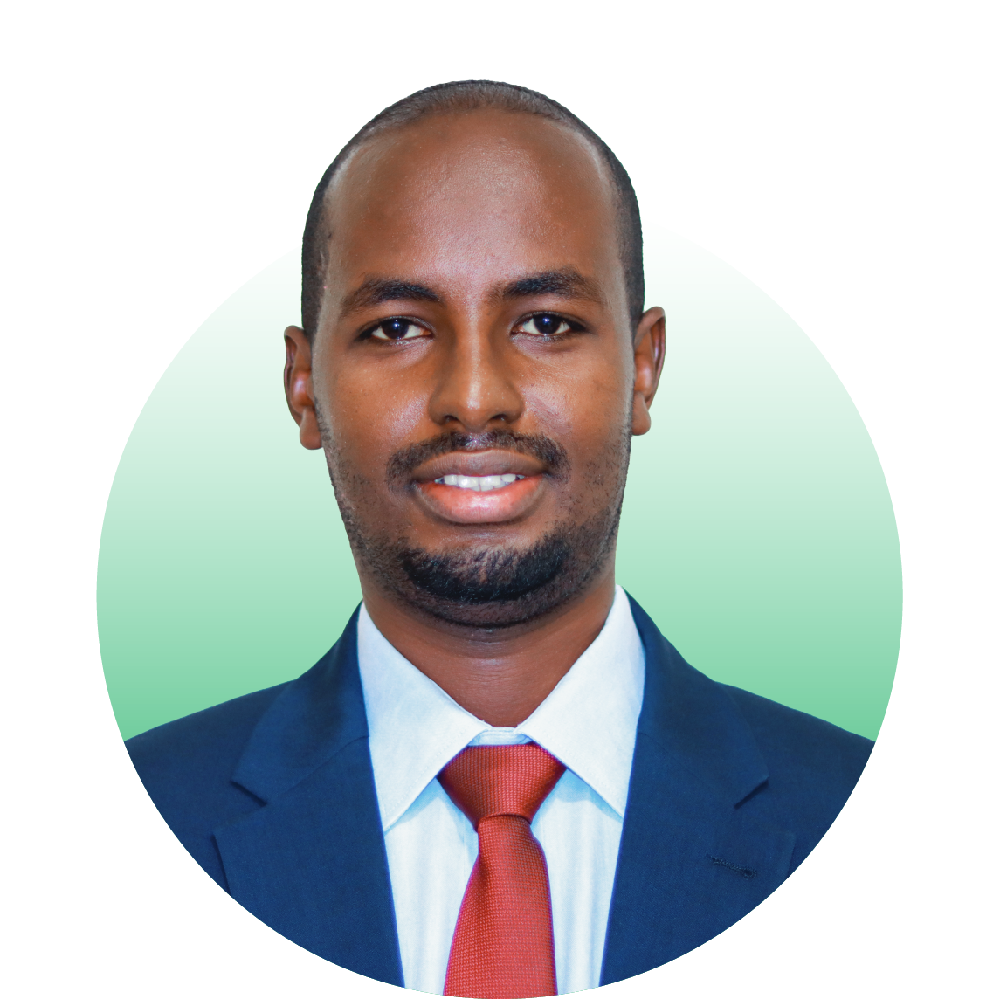

Greetings and welcome to the official website of Jamhuriya University of Science & Technology (JUST). We are thrilled to be partnering with you as you participate in an exciting educational journey. Whether you are a returning, Fresh or transfer student, you will find unlimited opportunities to enjoy life on campus by learning, exploring, and engaging with others. From the very beginning, Jamhuriya University of science and technology was envisioned as an institution whose sole purpose was serving the public. Over the last eight years, we have relentlessly followed our valued public mission – through research, innovation, education, and activities that develop the decent of society. Today, public impact and service remain at the core of our mission. As one of the leading private universities in the country, we are uniquely positioned to advance research that addresses major social issues, and we cooperate with communities in sustained partnerships that work to improve our collective future together. Many of our students find that the public mission of JUST seeps in, and changes them, in ways that help them make their way in the labor market, and in turn, make that labor market a better place. JUST’s commitment to engagement spans our faculty staffs, academic departments and student organizations. We also collaborate widely among disciplines, seeking to influence our range for ideal impact. This commitment is part of our DNA and held closely as one of our deepest values. At JUST, we strive to create an environment where students can empower themselves, realize their potential, and become the leaders we need for a better future. With this in mind, I hope you make the best of your university experience, and take full advantage of the opportunities, resources and services that are available to you during your studies here. The college years are a time of transformative personal and intellectual growth and exploration, and an opportunity to network and make lifelong friends, connections and memories. We are here to help make this happen for you and to support you in your educational pursuits. I encourage you to visit our campuses and learn more about the opportunities available to you at Jamhuriya University of science and technology.